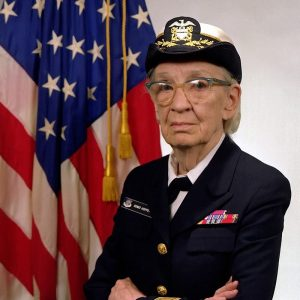

Grace Hopper
BIOGRAFIA
Grace Murray nasceu em 9 de dezembro de 1906 e faleceu em 1992. Foram 85 anos de história de vida e de participação na história da computação. Casada, passou a ser chamada de Grace Hopper. Grace Hopper é conhecida por pensar “fora da caixa”. Ou seja, a mesma não se contentava com seguir as coisas como elas eram simplesmente porque elas eram daquela maneira. Desde pequena fora incentivada por seus pais a almejar mais do que a sociedade esperava das mulheres da época.
